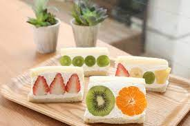

| お気に入り | 評価 | 経由地名 | 写真 | 所要時間 | 道のり | MAP | |
|---|---|---|---|---|---|---|---|
| {% if favorite[a.cnt] == 0 %} {% else %} {% endif %} | {{ detail[a.cnt]['rating'] }} | {% if detail[a.cnt]["photo_reference"] == "" %}画像が無いよ！！ | {% else %} | {% endif %}{{ via.name }} | {{ via.add_duration }} | {{ via.add_distance }} | {% if session_id == 0 %} {% else %} {% endif %} |